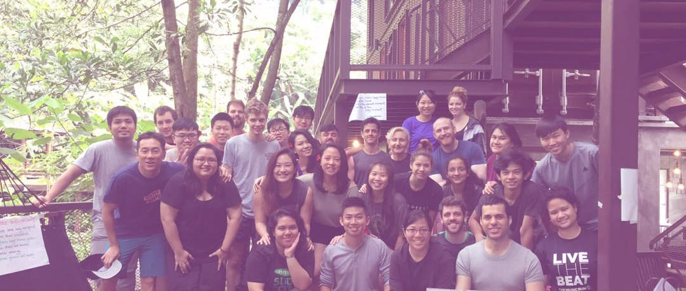
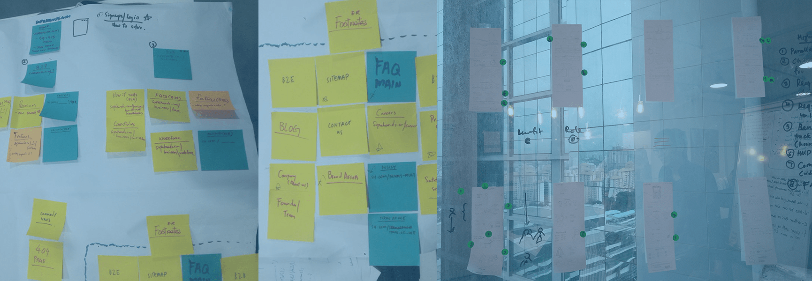
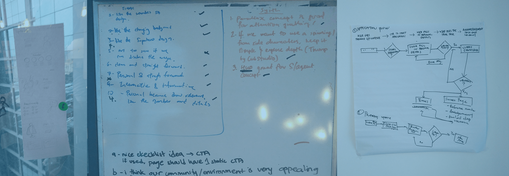
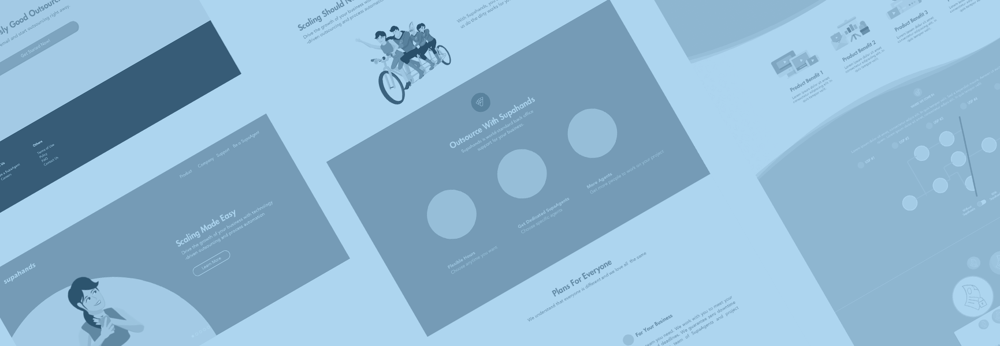
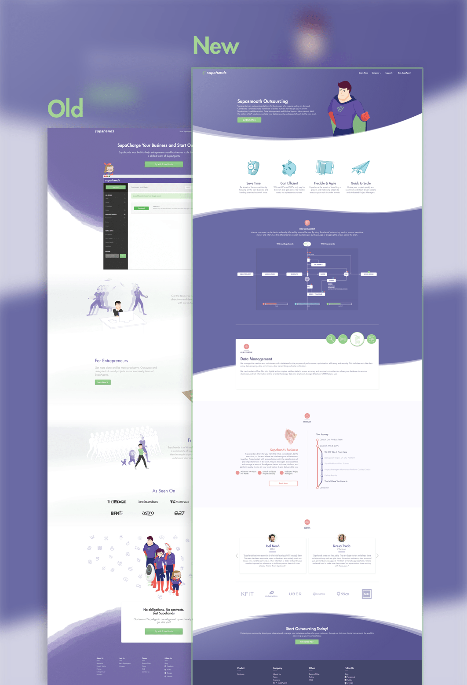
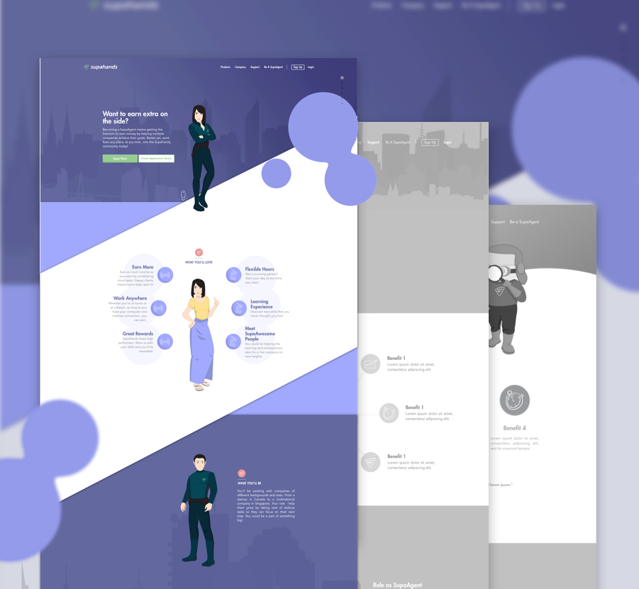
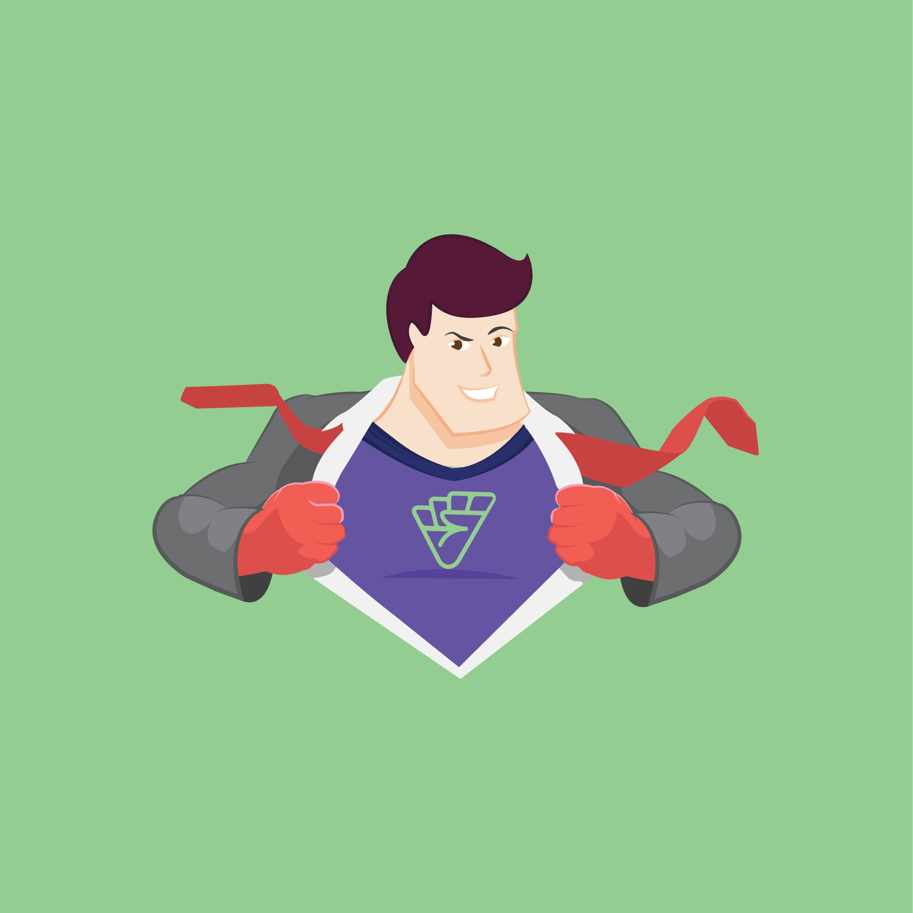
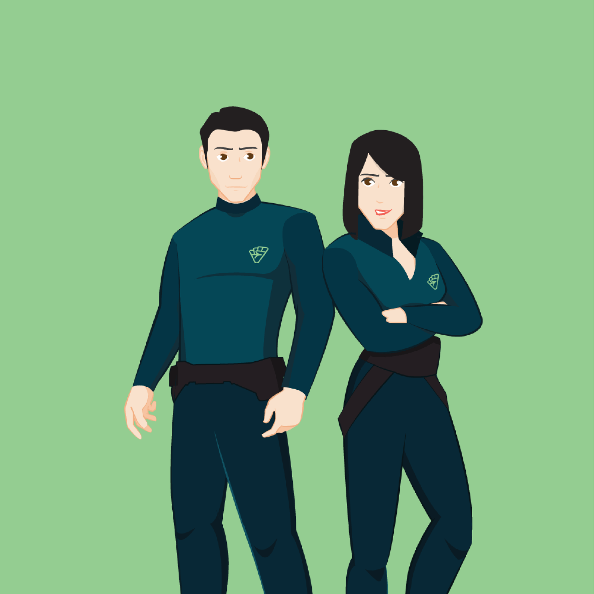
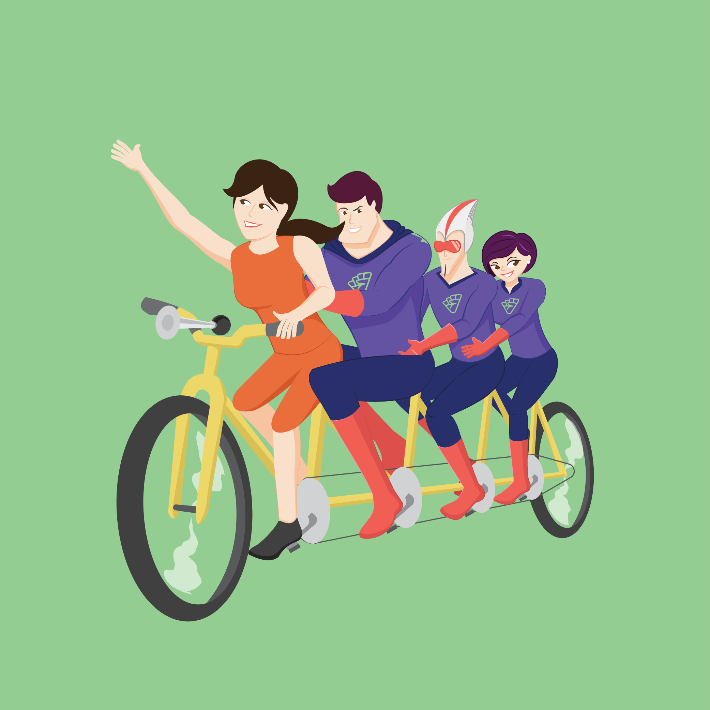
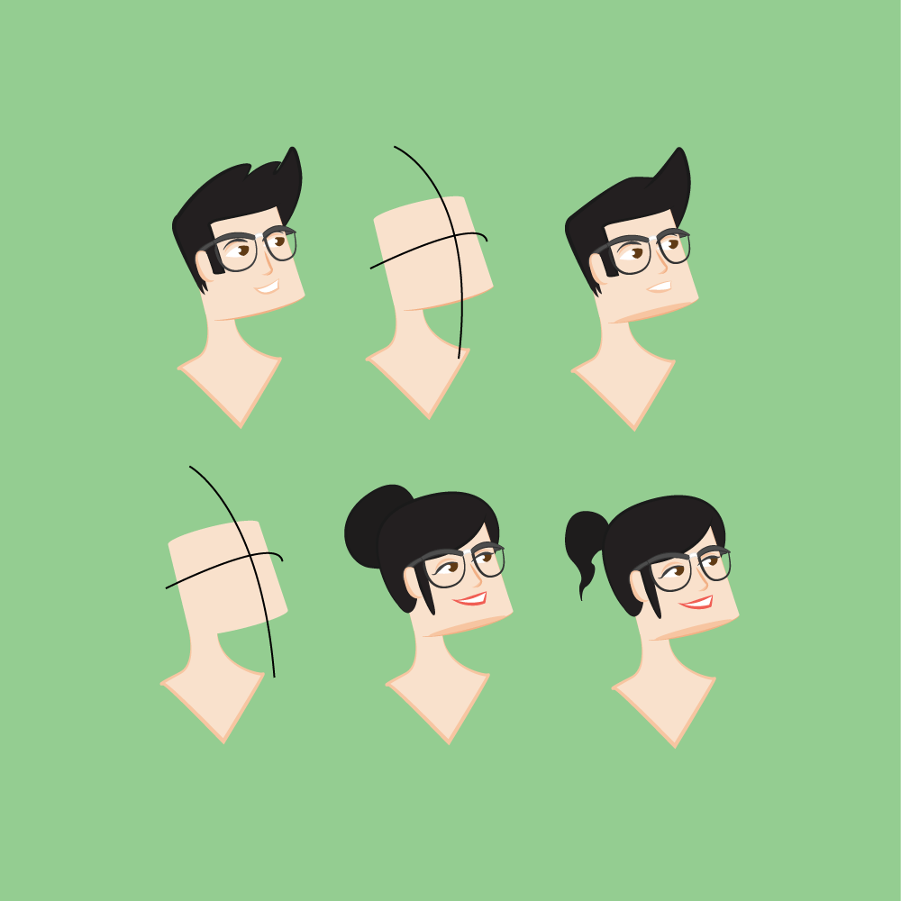

Supahands
UI/UX, Front-End, Website, Branding

Supahands is an international multicultural outsourcing service startup based in Bangsar South, Kuala Lumpur. Supahands is a platform that helps businesses to scale and increase productivity through the outsourcing of projects and business processes. Supahands provide flexible solutions and a tech-driven team of awesome SupaAgents; made better with in-house innovative cloud technology to produce optimum output.
As a Product Designer, I oversee 2 Supahands' products which are the dotcom website and the Workplace Operation Management System. A few months back, I was given the Creative Lead's responsibilities, so I am incharge of all Supahands' creative works including marketing collaterals, video projects and posters. At the earlier stage, the front-end was initialized by one of my collegue while I'm designing the website, then I took over.
Background
Problem: Supahands business is changing from a B2C to a B2B company, the goal is to stop B2C clients from using and contacting Supahands and attract B2B clients instead. This is a huge step from Supahands and requires a total revamp of our branding and webpages to ensure that we are communicating the right message and attract the right users.
Team:
Tools: Sketch App, Adobe Illustrator, Invision, Marvel App
Discovery Phases: We run a weekly Design Sprints for each webpages. Means that in 5 days, everyone in the team sits together to define the purpose for each pages and uses cases of our potential users. Having people from different department is vital to obtain different perspectives and hammer down the right approach.

Through this ideation process we narrow down our educated assumptions and solutions

A few wireframe versions are tested with users before we finalize the design.

Solution: Based from the user testing results, I created a final design in Sketch and pass it to the developer. We had used UCD (User-centered Design) approach, this is why user's feedback is so important in shaping the final design.
Outcome: New modern Supahands landing pages, New cleaner and more consistent visual language (Icons and illustrations)

I applied a Parallax Effect for each headers to give the website a sense of depth.




Of course, I can't show all of my work on this page, but here are some of my illustrations that I used for the website and marketing collaterals. Almost all of the illustrations on Supahands.com are designed by me using Adobe Illustrator.




I hope you like it, and feel free to contact me for any questions.
Don't forget to checkout the live version here.